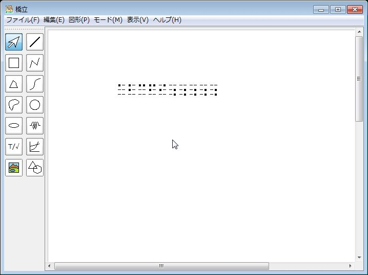
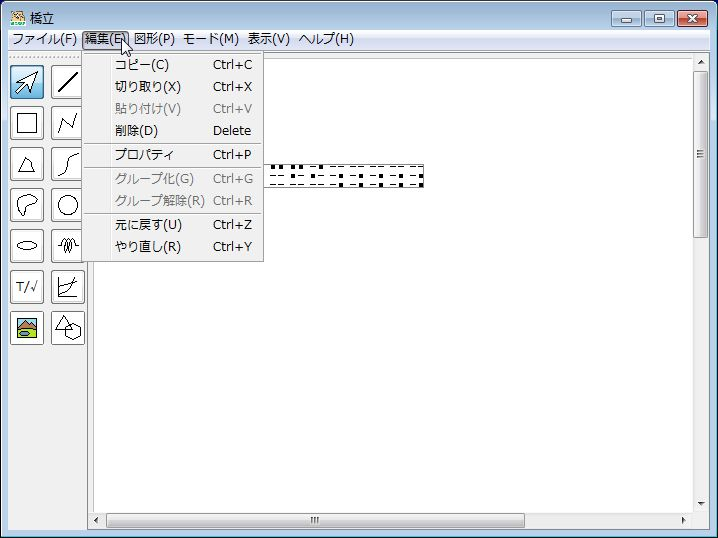
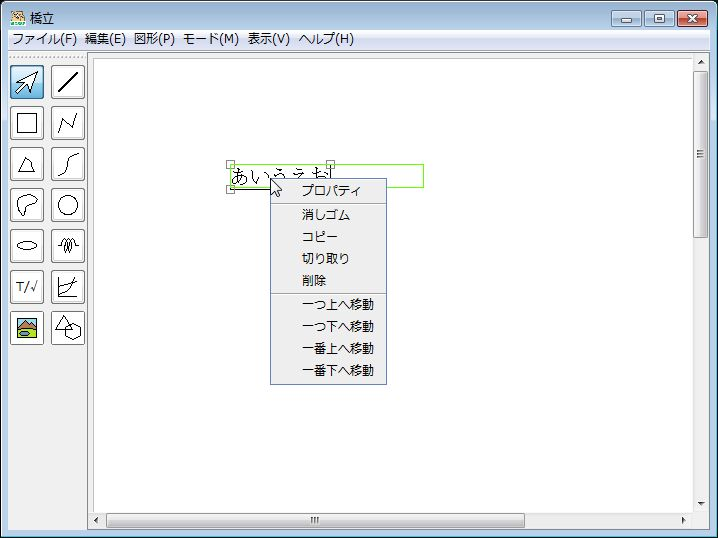
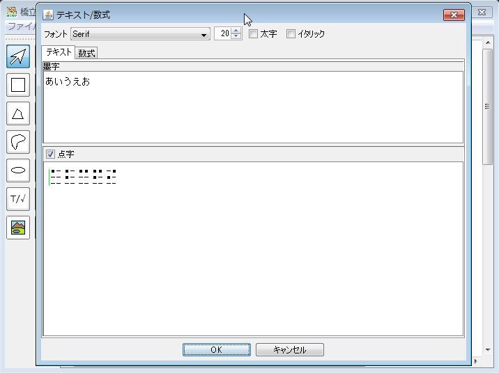

- (1) 描画領域でテキスト/数式を選択する
墨字モード

|
点字モード
 |
- (2) 「編集」メニューで「プロパティ」をクリックするか、選択した図形上でマウスの右ボタンをクリックして表示されるメニューの「プロパティ」を選択する → プロパティ画面が表示される
|
「編集」メニューの「プロパティ」

|
右クリックのメニュー

|
プロパティ画面

- (3) プロパティ画面の点字欄をクリックする
- (4) 入力したい位置でマウスをクリックするか、矢印キーでカーソルを移動する
- (5) d、f、g、j、k、lのキーで6点を入力する → 点字と墨字が表示される
- (6) Enterキーを押す → 入力が確定する